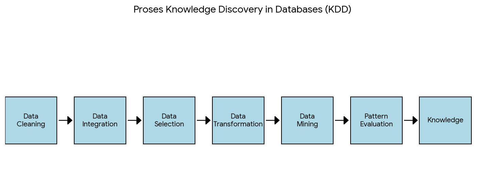
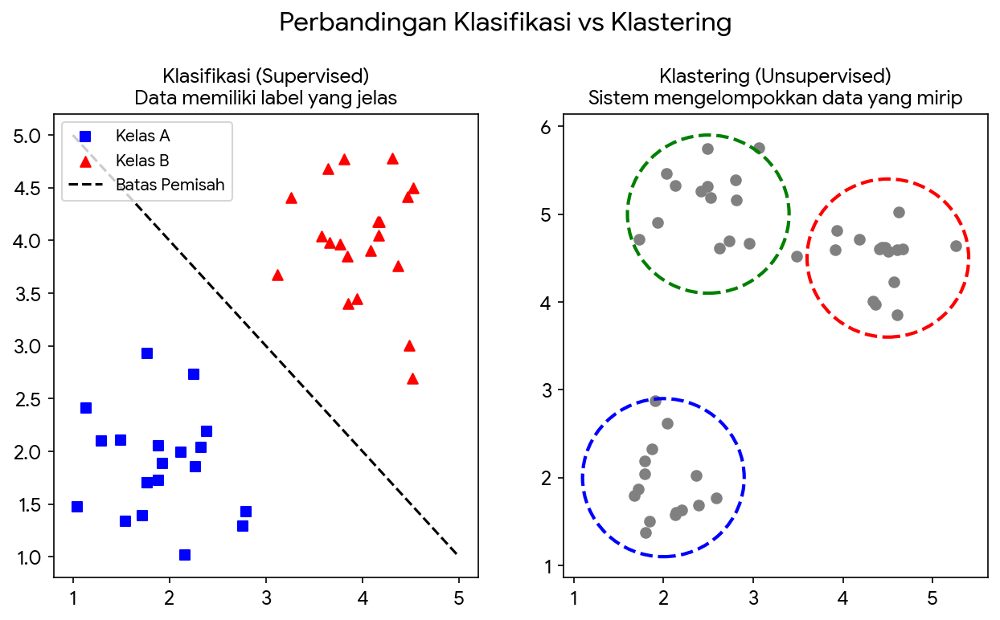
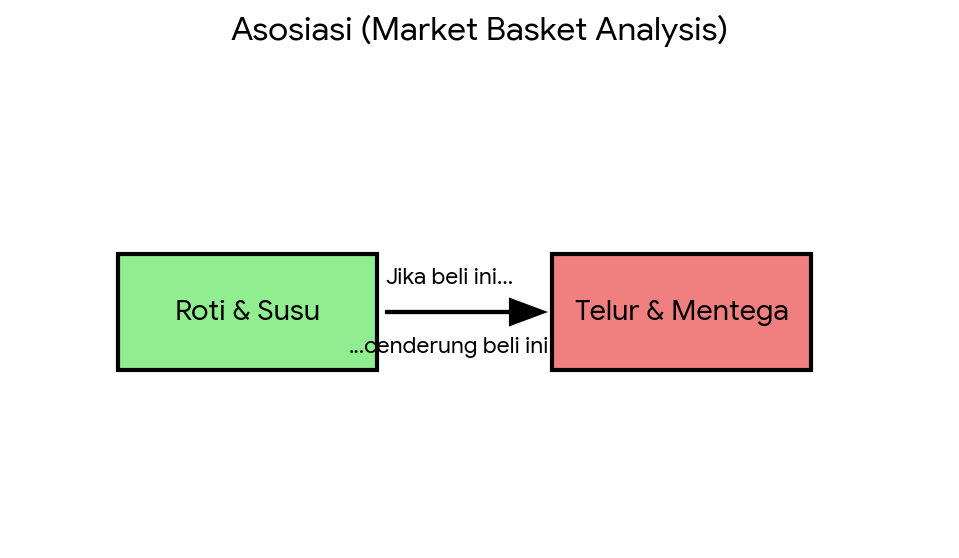

Pengantar Penambangan Data (Data Mining)#
Apa itu Penambangan Data?#
Penambangan Data atau Data Mining adalah proses inti untuk menemukan pola, korelasi, dan anomali yang menarik dari kumpulan data dalam jumlah besar (Big Data). Tujuannya adalah mengubah data mentah menjadi informasi atau pengetahuan yang berharga untuk pengambilan keputusan.
Istilah ini sering digunakan bergantian dengan Knowledge Discovery in Databases (KDD), meskipun sebenarnya data mining hanyalah salah satu langkah penting dalam proses KDD yang lebih luas.
Proses Knowledge Discovery in Databases (KDD)#
Untuk mengubah data mentah menjadi pengetahuan yang bisa ditindaklanjuti, diperlukan serangkaian tahapan yang sistematis. Berikut adalah diagram alir proses KDD:

Penjelasan Tahapan Singkat:
Data Cleaning: Membersihkan data dari noise (gangguan) dan data yang tidak konsisten atau hilang.
Data Integration: Menggabungkan data dari berbagai sumber yang berbeda.
Data Selection: Memilih data yang relevan dengan tujuan analisis dari database.
Data Transformation: Mengubah data menjadi format yang sesuai untuk ditambang (misalnya normalisasi angka).
Data Mining: Proses inti di mana metode cerdas diterapkan untuk mengekstrak pola data.
Pattern Evaluation: Mengevaluasi pola yang ditemukan apakah benar-benar menarik dan berguna berdasarkan ukuran tertentu.
Knowledge Presentation: Menyajikan pengetahuan yang ditambang kepada pengguna menggunakan teknik visualisasi agar mudah dipahami.
Metode Utama dalam Data Mining#
Tugas data mining umumnya dibagi menjadi beberapa kategori utama berdasarkan tujuannya dan apakah data yang digunakan memiliki label atau tidak.
1. Klasifikasi vs Klastering (Classification vs Clustering)#
Perbedaan mendasar kedua metode ini terletak pada ada atau tidaknya label data sebelumnya.

Klasifikasi (Gambar Kiri - Supervised Learning):
Tujuannya adalah memasukkan data baru ke dalam kategori (kelas) yang sudah ditentukan sebelumnya.
Model dilatih menggunakan data yang sudah “diberi label”. Seperti pada gambar kiri, kita sudah tahu mana data “kotak biru” dan “lingkaran merah”, lalu sistem membuat garis batas pemisahnya.
Contoh: Mendeteksi email spam (kelas: Spam atau Bukan Spam), memprediksi jenis bunga Iris (kelas: Setosa, Versicolor, atau Virginica).
Klastering (Gambar Kanan - Unsupervised Learning):
Tujuannya adalah mengelompokkan data berdasarkan kemiripannya tanpa mengetahui label/kategori sebelumnya.
Sistem mencari sendiri struktur alami dari data tersebut. Seperti pada gambar kanan, data yang mirip secara otomatis berkumpul membentuk kelompok-kelompok (klaster).
Contoh: Segmentasi pelanggan pasar berdasarkan perilaku belanja untuk target promosi.
2. Asosiasi (Association Rules)#
Metode ini digunakan untuk menemukan aturan yang menunjukkan hubungan kuat antar item dalam database transaksi yang besar. Metode ini sangat populer di industri ritel.

Konsep: Teknik ini sering disebut Market Basket Analysis. Tujuannya adalah mencari pola “Jika membeli A, maka kemungkinan besar akan membeli B”.
Contoh: Seperti ilustrasi di atas, analisis keranjang belanja menemukan bahwa pelanggan yang membeli Roti dan Susu (dalam keranjang) memiliki kecenderungan kuat (asosiasi) untuk juga membeli Telur dan Mentega pada transaksi yang sama. Informasi ini berguna untuk pengaturan tata letak rak toko atau rekomendasi produk e-commerce.